전자산업기사 (2018-04-28 기출문제)
1과목: 전자회로
1. LED 세그먼트의 활용법으로 옳은 것은?
- 공통 애노드(Common Anode)끝단에 전원을 연결한다.
- 공통 애노드(Common Anode)끝단에 접지를 연결한다.
- 공통 애노드(Common Anode)끝단에 세그먼트의 캐소드 단자를 각각 전원을 연결한다.
- 공통 애노드(Common Anode)끝단에 세그먼트의 캐소드 단자를 각각 접지를 연결한다.
(정답률: 74%)

2. 다음 회로에서 Vi = Vmsinωt 의 파형을 인가하였을 때, 출력 파형에 해당되는 회로는? (단, Vm은 3V보다 크다.)
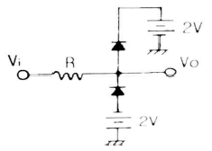
- 양단 클리퍼 회로
- 톱니파 발생 회로
- 정현파 발생 회로
- AND 게이트 회로
(정답률: 85%)
3. AM 변조에서 반송파의 전력이 500mW, 변조도가 60%일 때 피변조파의 전력은 몇 mW인가?
- 180
- 300
- 590
- 900
(정답률: 79%)
4. 5V 직류전압원에 저항(R) 30Ω과 LED가 직렬로 연결된 회로에서 LED에서 소모되는 전력은? (단, LED의 전압강하는 1.4V 이다.)
- 124mW
- 168mW
- 432mW
- 600mW
(정답률: 65%)
5. 연산증폭기에 대한 설명 중 옳은 것은?
- 정귀환 회로를 추가한 고이득 직결증폭기를 말하며, 병렬 증폭기를 이용한다.
- IC화된 연산증폭기는 신뢰도, 안정도가 떨어지지만 저가, 회로의 소형화 등의 장점을 가진다.
- 이상적 연산증폭기인 경우 대역폭은 ∞를 갖는다.
- 가상 접지는 실제 물리적 접지와 전기적 특성이 동일하다.
(정답률: 81%)
6. 다음 회로에서 전압 이득이 –100이 되기 위한 R2값은 얼마인가?
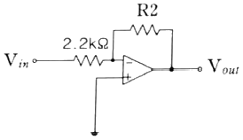
- 2.2kΩ
- 110kΩ
- 220kΩ
- 440kΩ
(정답률: 90%)
7. 귀환 발진기의 발진조건에 대한 설명 중 틀린 것은? (단, A는 증폭도, β는 귀환량이다.)
- 정귀환을 이용한다.
- A의 위상 변화는 180˚ 이다.
- β의 위상 변화는 0˚ 이다.
- 귀환이득 Aβ=1이며, 위상변화는 0˚이다.
(정답률: 75%)
8. 트랜지스터에서 β는 다음 중 어느 조건에서 결정할 수 있겠는가?
- IE 가 일정할 때 VCB 와 IB 의 변화
- IE 가 일정할 때 IC 와 IB 의 변화
- VCE가 일정할 때 VCB 와 IB 의 변화
- VCE 가 일정할 때 IC 와 IB 의 변화
(정답률: 71%)
9. 정류전원의 구성 중 정류기 회로와 필터 사이에 나타나는 파형의 형태는? (단, 입력전압은 사인파 교류전압이라 가정한다.)
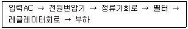
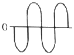
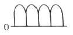
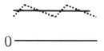
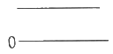
(정답률: 81%)
10. n형 반도체를 만들기 위하여 사용하는 불순물은?
- 인(P)
- 알루미늄(Al)
- 인듐(In)
- 갈륨(Ga)
(정답률: 82%)
11. 다음 같은 회로에서 RL 에 100mA의 전류가 흐를 때 RL 의 값은? (단, Vi =5V, R1 = 47kΩ, R2 = 470kΩ이다.)
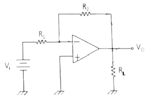
- 5Ω
- 50Ω
- 500Ω
- 5kΩ
(정답률: 73%)
12. 신호의 일그러짐이 가장 적고 안정한 증폭기는?
- A급
- B급
- C급
- AB급
(정답률: 78%)
13. 다이오드에 관한 설명으로 옳지 않은 것은?
- 다이오드는 역바이어스와 순바이어스로 동작한다.
- 다이오드는 이상적인 스위치로 볼 수 있다.
- 다이오드는 역 항복에서 동작해서는 아니 된다.
- 항복전압은 장벽전위보다 낮다.
(정답률: 71%)
14. 이상적인 연산증폭기(OP-AMP)의 특징으로 틀린 것은?
- 입력 임피던스는 무한대(∞)이다.
- 입력은 반전과 비반전 단자로 구분할 수 있다.
- 전압이득은 무한대(∞)이다.
- 출력 임피던스는 무한대(∞)이다.
(정답률: 77%)
15. 1mH의 인덕터에 전압 1V, 주파수 1kHz의 신호를 인가할 경우 리액턴스 값은?
- 1[Ω]
- 1[H]
- 2π[Ω]
- 2π[H]
(정답률: 68%)
16. 일반적인 펄스 파형의 구간별 명칭에 관한 설명 중 옳은 것은?
- 지연시간 : 목표량에 0~40[%]까지 접근하는 시간
- 정정시간 : 목표량에 ±3[%]까지 접근하는 시간
- 상승시간 : 목표량에 10~90[%]까지 접근하는 시간
- 하강시간 : 목표량에 10~90[%]까지 하강하는 시간
(정답률: 77%)
17. 부귀환 증폭기의 일반적인 특징에 대한 설명으로 틀린 것은?
- 왜곡의 감소
- 잡음의 감소
- 대역폭의 증가
- 안정도의 감소
(정답률: 81%)
18. 트랜지스터의 증폭기로 사용할 때의 동작영역으로 옳은 것은?
- 차단영역
- 포화영역
- 활성영역
- 비포화영역
(정답률: 78%)
19. 그림과 같은 회로를 여파기로 사용하면 주파수 특성은?
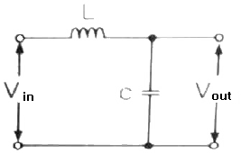
- 고역통과특성
- 저역통과특성
- 대역통과특성
- 대역저지특성
(정답률: 74%)
20. 그림과 같이 1kΩ 저항과 다이오드의 직렬회로에서 전압(VO)의 크기는 약 몇 [V]인가?
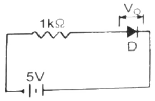
- 0
- 0.1
- 0.7
- 5
(정답률: 63%)
2과목: 전기자기학 및 회로이론
21. 두 자기인덕턴스를 직렬로 연결하여 두 코일이 만드는 자속이 동일 방향일 때 합성인덕턴스를 측정하였더니 75mH가 되었고, 두 코일이 만드는 자속이 서로 반대인 경우에는 25[mH]가 되었다. 두 코일의 상호인덕턴스는 몇 mH인가?
- 12.5
- 20.5
- 25
- 30
(정답률: 65%)
22. 평행판 콘덴서의 극간 전압이 일정 한 상태에서 극간의 공기가 있을 때의 흡인력을 F1, 극판 사이에 극판 간격의 2/3두께의 유리판 (εr=10)을 삽입할 때의 흡인력을 F2라 하면
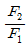
는?- 1/2.5 로 작아진다.
- 1/1.5 로 작아진다.
- 2.5배로 커진다.
- 1.5배로 커진다.
(정답률: 51%)
23. 3 × 10-8[C] 과 6 × 10-8인 두 점전하가 20cm떨어져 있을 때 두 전하 중심에서의 전계의 세기는 몇 V/m인가?
- 27 × 103
- 36 × 103
- 72 × 103
- 81 × 103
(정답률: 60%)
24. 2cm의 간격을 가진 선간전압 6600V인 두 개의 평행도선에 2000A의 전류가 흐를 때 도선 1m마다 작용하는 힘은 몇 N/m인가?
- 20
- 30
- 40
- 50
(정답률: 47%)
25. 전류 I[A]에 대한 P점의 자계 H[A/m]의 방향이 옳게 표시된 것은? (단, ◉은 지면을 나오는 방향, ⊗은 지면으로 들어가는 방향표시이다.)
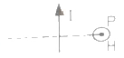
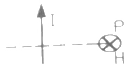
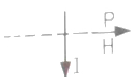
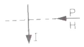
(정답률: 74%)
26. 자속밀도 B[Wb/m2]인 자계 내를 속도 v[m/s]로 운동하는 길이 dl[m]의 도선에 유기되는 기전력[V]를 벡터적으로 표현하면?
- v × B
- (v × B) · dl
- (v · B)
- (v · B) × dl
(정답률: 68%)
27. 열전대는 무슨 효과를 이용한 것인가?
- 압전효과
- 제어백효과
- 홀효과
- 가우스효과
(정답률: 70%)
28. 전계 E[V/m], 자계 H[A/m]의 전자계가 평면파를 이루고 자유공간으로 전파될 때, 단위시간당 전력밀도는 몇 [W/m2]인가?
- EH
 E2H
E2H- E2H
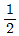
EH
(정답률: 58%)
29. 평행판 콘덴서에서 전극판사이의 거리를 1/2로 줄이면 콘덴서의 용량은 처음 값에 대하여 어떻게 되는가?
- 1/2로 감소한다.
- 1/4로 감소한다.
- 2배로 증가한다.
- 4배로 증가한다.
(정답률: 63%)
30. 대전도체의 성질 중 옳지 않은 것은?
- 도체표면의 전하밀도를 σ[C/m2]이라 하면 표면상의 전계는
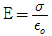
[V/m]이다. - 도체 표면상의 전계는 면에 대해서 수평이다.
- 도체 내부의 전계는 0이다.
- 도체는 등전위이고, 그의 표면은 등전위면이다.
(정답률: 55%)
31. 다음 회로에서 L1=6mH, L2=7mH, R1=4Ω, R2=9Ω, M=5mH이고, L1과 L2가 유도결합 되어있을 때, 등가 임피던스는 몇 Ω인가? (단, ω=100[rad/s]이다.)
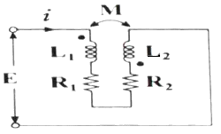
- 13+j1.2
- 13+j1.5
- 13+j2.3
- 13+j3.3
(정답률: 56%)
32. 다음 그림과 같은 R-L 직렬회로에 스위치를 닫아 직류전압(E)을 인가할 때, 정상상태 시 전류는 몇 A인가? (단, 시간(t)은 ∞이다.)
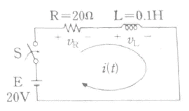
- 0.5
- 1.0
- 1.5
- 2.0
(정답률: 42%)
33. 다음 중 최대값 Vm인 정현파 전압의 평균값(Vav)은?
- 0
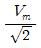
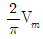
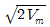
(정답률: 65%)
34. 구동점 임피던스(driving point impedance)함수에 있어서 영점(zero)의 상태는?
- 전류가 흐르지 않는 경우이다.
- 전압이 가장 큰 상태이다.
- 회로를 개방한 것과 같다.
- 회로를 단락한 것과 같다.
(정답률: 70%)
35. sint의 라플라스 변환은?
- 1 / s+1
- s / s2+1
- 1 / s2+1
- s2 / s2+1
(정답률: 57%)
36. 커패시턴스만의 회로의 특징으로 옳은 것은? (단, i=Imsinωt[A]의 정현파 전류가 흐른다.)
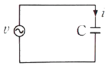
- 전압과 전류는 동일 주파수의 정현파이다.
- 전압이 전류보다 위상이 90˚ 앞선다.
- 커패시터 전압이 불연속적이다.
- 전압과 전류의 실효치의 비는 ω/C 이다.
(정답률: 51%)
37. 교류 파형에서 다음 식으로 계산할 수 있는 결과값으로 옳은 것은?
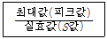
- 맥동률
- 파형률
- 왜형률
- 파고율
(정답률: 72%)
38. 다음 회로망의 전달함수
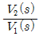
는?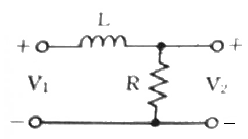
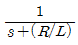
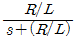
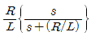
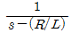
(정답률: 63%)
39. 그림과 같은 이상 변압기(ideal transformer) 상호인덕턴스(M)의 값은 몇 H인가?
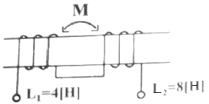
- 8√2
- 4√2
- 2√2
- 2
(정답률: 70%)
40.
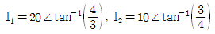
일 때, I1 - I2의 결과 값은?- 4 - j10
- 4 + j10
- 20 + j10
- 20 + j22
(정답률: 56%)
3과목: 전자계산기일반
41. 다음 중 연산장치와 레지스터들 간의 데이터 전송을 위한 중앙처리장치의 내부 버스(internal bus)가 아닌 것은?
- 주소 버스(address bus)
- 데이터 버스(data bus)
- 시스템 버스(system bus)
- 제어 버스(control bus)
(정답률: 60%)
42. 프로그램의 오류를 고쳐 나가는 작업을 무엇이라 하는가?
- 코딩(CODING)
- 디버깅(DEBUGGING)
- 펀칭(PUNCHING)
- 레코딩(RECORDING)
(정답률: 84%)
43. 다음 그림은 어떤 컴퓨터 구조에 해당하는가? (단, CU : control unit, PU : process unit, IS : instruction, DS : data stream, MM : memory module)
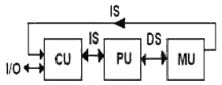
- SISD 구조
- SIMD 구조
- MISD 구조
- MIMD 구조
(정답률: 73%)
44. 마이크로프로세서가 기억장치 및 입출력 기기와 연결을 위해 가져야 할 것이 아닌 것은?
- 데이터 버스
- 어드레스 버스
- 결합 버스
- 제어선
(정답률: 60%)
45. 부동소수점 연산에서 양의 지수 값의 최대 값을 초과하여 발생하는 오류를 무엇이라고 하는가?
- 오버플로우
- 언더플로우
- 레지스터
- 큐
(정답률: 86%)
46. 다음 중 입력장치인 것은?
- LCD Display
- Plotter
- Printer
- Mouse
(정답률: 84%)
47. 다음과 같은 레지스터의 2진수 값을 오른쪽으로 세 번 시프트 시켰다면, 실제로 이 레지스터가 수행한 연산은?
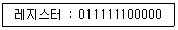
- added 400
- divided by 8
- divided by 3
- multiplied by 22
(정답률: 78%)
48. 컴퓨터의 성능을 측정할 수 있는 방법으로 단위 시간에 얼마나 많은 일을 실행했는가를 나타내는 것은?
- Clock
- Frequency
- Response Time
- Throughput
(정답률: 69%)
49. 목적 프로그램을 생성하지 않고 필요할 때마다 기계어로 번역하여 실행하는 방식의 언어를 무엇이라 하는가?
- 어셈블러
- 컴파일러
- 인터프리터
- 마이크로어셈블러
(정답률: 66%)
50. 반가산기에서 X=0, Y=1을 입력할 때, 출력 올림수(C)와 합(S)은?
- C=0, S=0
- C=1, S=0
- C=0, S=1
- C=1, S=1
(정답률: 78%)
51. 입출력 동작이 시작되어 끝날때까지 하나의 입출력 장치가 전용으로 쓸 수 있는 채널로서 고속장치에 주로 쓰이는 채널은?
- Selector Channel
- Multiplexer Channel
- Block Multiplexer Channel
- DMA
(정답률: 68%)
52. 마이크로컴퓨터에서 값이 고정되어 변하지 않는 시스템프로그램을 저장하고 있는 부분은?
- 마이크로프로세서
- 인덱스 레지스터
- ROM
- RAM
(정답률: 71%)
53. 보조기억장치가 아닌 것은?
- RAM
- SSD
- HDD
- FDD
(정답률: 79%)
54. 4개의 2진 변수로 수행할 수 있는 논리 연산은 몇 가지인가?
- 8
- 16
- 32
- 64
(정답률: 81%)
55. 다음 중 가장 우선 순위가 높은 인터럽트는?
- 입출력 인터럽트
- 전원, 하드웨어 고장 등의 인터럽트
- 내부 인터럽트
- 조작원 요구 인터럽트
(정답률: 77%)
56. 페치(fetch) 명령 사이클 상태를 나타낸 것으로 가장 적합하지 않은 것은?
- ADD X : MBR(OP) → IR
- AND X : MBR(OP) → IR
- ADD X : MBR + AC → AC
- JMP X : MBR(PC) → IR
(정답률: 63%)
57. 실제로 제한된 양의 주기억장치를 가지고 있지만 사용자에게 매우 커다란 주기억장치를 갖고 있는 것처럼 느끼게 하는 기억장치 운용방식은?
- 캐시 메모리
- 세그먼트 메모리
- 가상 메모리
- 연관 메모리
(정답률: 76%)
58. 입출력을 수행하는 각 장치의 기능에 대한 설명으로 가장 옳지 않은 것은?
- I/O 제어는 프로그램 메모리로부터 명령을 받아 인터페이스를 통하여 주변장치와 통신한다.
- 인터페이스 논리는 I/O 버스로부터 받은 명령을 해석하고 주변장치 제어기에 신호를 보낸다.
- 각 주변장치는 특정한 전기 기계적 장치를 동작시키고, 제어하는 자신의 제어기를 갖고 있다.
- I/O 버스는 데이터의 흐름을 동기화하고 주변장치와 컴퓨터 사이의 전달 속도를 관리한다.
(정답률: 54%)
59. 가상기억장치에서 블록의 크기가 가변인 방식을 무엇이라 하는가?
- Map
- Stage
- Paging
- Segmentation
(정답률: 71%)
60. 그레이 코드(Gray code) 1100을 2진수로 표시하면?
- 1000
- 1001
- 1010
- 1011
(정답률: 67%)
4과목: 전자계측
61. 가청 주파수 필터로 사용할 수 있는 것은?
- 대역소거필터
- 대역통과필터
- 저역필터
- 고역필터
(정답률: 57%)
62. 디지털 전압계의 구동 원리는 다음 중 어떤 기기와 가장 유사한가?
- D/A 변환기
- A/D 변환기
- 클록 발진기
- 계수기
(정답률: 78%)
63. Q미터에서 코일의 실효 Q와 동조용 콘덴서 C의 값을 알면 측정할 수 있는 것은?
- 코일의 실표 Q의 측정
- 코일의 실효 인덕턴스의 측정
- 코일 Q의 참값 측정
- 코일의 실효 저항의 측정
(정답률: 53%)
64. 전력용 반도체 소자인 GTO(gate turn-off thyristor)를 턴 오프하기 위한 조건으로 옳은 것은?
- 게이트에 음(-) 신호를 준다.
- 게이트에 양(+) 신호를 준다.
- 게이트의 전류를 0으로 한다.
- 게이트 전압 신호를 0으로 해준다.
(정답률: 60%)
65. 다음 회로에 브리지 정류형 계기에 흐르는 전류의 평균값 ID 와 실효 전류 Ie와의 관계는?
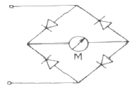
- ID = 0.9 · Ie
- ID = 0.707 · Ie
- ID = 0.5 · Ie
- ID = Ie
(정답률: 59%)
66. 트랜지스터를 사용한 저항용량(RC) 결합 증폭기에서 용량이 큰 결합용 콘덴서를 사용하는 이유로 옳은 것은?
- 고역에서 주파수 특성을 좋게 하기 위하여
- 저역에서 주파수 특성을 좋게 하기 위하여
- 중역에서 주파수 특성을 좋게 하기 위하여
- 협대역에서 주파수 특성을 좋게 하기 위하여
(정답률: 59%)
67. 주파수 계수기(frequency counter)의 구성요소 중 표준 수정발진회로 다음에 무슨 회로가 첨부 되는가?
- 분주회로
- 게이트 제어회로
- 계수회로
- 파형 증폭회로
(정답률: 45%)
68. 싱크로스코프(synchroscope)의 수직축과 수평축의 교정에 사용되는 발진기는?
- 정현파
- 펄스파
- 구형파
- 톱니파
(정답률: 61%)
69. 오실로스코프를 사용하여 측정이 불가능한 것은?
- 전압
- coil의 Q
- 주파수
- 변조도
(정답률: 85%)
70. 표준 저항기 재료의 구비 조건으로 틀린 것은?
- 저항이 안정할 것
- 고유 저항이 클 것
- 온도 계수가 적을 것
- 구리에 대한 열기전력이 클 것
(정답률: 74%)
71. 펄스 발생기와 구형파 발생기의 근본적인 차이점은 사용률에 있다. 여기서 사용률을 나타낸 것은? (단, 사용률(충격계수)이란 duty cycle를 말한다.)
- 사용률 = 하강시간 / 상승시간
- 사용률 = 펄스폭 / 펄스주기
- 사용률 = 상승시간 / 펄스주기
- 사용률 = 하강시간 / 펄스폭
(정답률: 80%)
72. 피측정 주파수(fx)와 표준주파수(fs)를 혼합검파하여 그 비트(beat) fx - fs가 0으로 되게 fs를 조정하여 측정할 수 있는 것은?
- 공진주파수계
- 계수형 주파수계
- 윈-브리지 주파수계
- 헤테로다인 주파수계
(정답률: 65%)
73. 싱크로스코프(synchroscope) 소인시간 전환 스위치를 200[μs/cm]로 놓고, 1kHz의 길이를 측정하였더니 5cm이었을 때, 신호 주파수는?(오류 신고가 접수된 문제입니다. 반드시 정답과 해설을 확인하시기 바랍니다.)
- 103kHz
- 500kHz
- 1kHz
- 104kHz
(정답률: 46%)
74. 오실로스코프의 CRT에 주로 많이 사용되는 편향방식은?
- 정전편향, 정전집속
- 전자편향, 전자집속
- 정전편향, 전자집속
- 전자편향, 정전집속
(정답률: 64%)
75. 가동 코일형 계기의 지시값은 어떤 값으로 나타내는가?
- 평균치
- 실효치
- 최대치
- 파고치
(정답률: 59%)
76. 최대지시 1mA인 전류계에 0.1Ω의 분류기를 접속하여 최대 1A까지의 전류를 측정하게 했다면 전류계 자체의 내부저항은 몇 Ω인가?
- 99.9Ω
- 101Ω
- 109Ω
- 199Ω
(정답률: 68%)
77. 다음 회로에서 미지 인덕턴스 Lx 는 얼마인가?
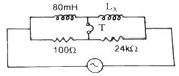
- 20[H]
- 18[H]
- 19.2[H]
- 22.2[H]
(정답률: 70%)
78. 주파수 측정용으로 사용이 불가능한 것은?
- 공진 브리지(resonance bridge)
- 윈 브리지(Wien bridge)
- 켈빈 더블 브리지(Kelvin double bridge)
- 캠벨 블지(Campbell bridge)
(정답률: 64%)
79. 일반적인 표준 신호발생기는 출력단을 개방하였을 때 몇 [V]의 전압을 0[dB]로 표시하는가?
- 1[μV]
- 1[V]
- 0.775[V]
- 7.75[V]
(정답률: 64%)
80. 단상 유도형 적산 전력계의 구성요소로 틀린 것은?
- 계량 장치
- 제동 장치
- 전자(電磁) 장치
- 표시(디스플레이) 장치
(정답률: 65%)